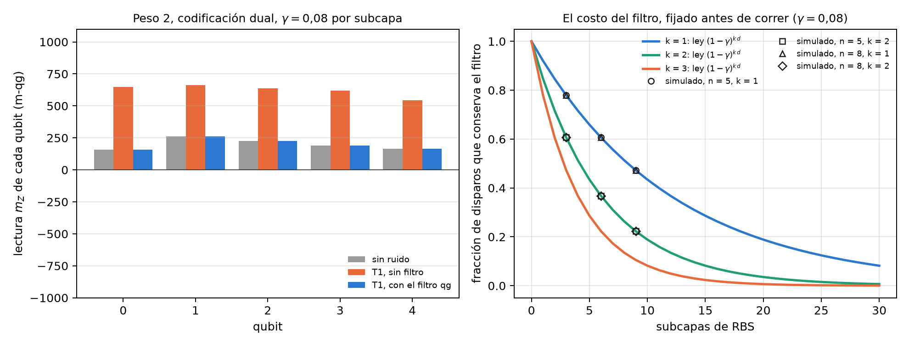
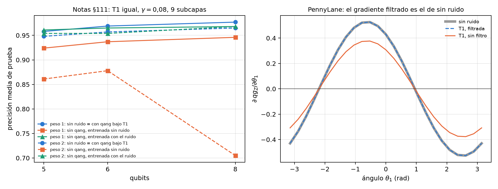

20 Redes neuronales cuánticas que conservan el peso (WeightQNN)
La Parte VII trata el aprendizaje automático cuántico, y empieza por la red que mejor se lleva con la base del capítulo 1. Una red neuronal cuántica (QNN) que conserva el peso de Hamming (el número de unos del registro) vive en un sector fijo, y eso tiene dos consecuencias. La primera es buena: el filtro qg, que descarta los disparos que salieron del sector, deja la lectura exacta bajo la relajación T1. La segunda es honesta: una red así es simulable en una computadora común, y no puede dar ventaja cuántica. Este capítulo lee la red en m-qg, verifica con código las propiedades estructurales y resume los experimentos de clasificación de las notas (§75–§114), todos con predicciones registradas antes de correr, con y sin qang.
20.1 Desde la base: un sector y sus lecturas
La compuerta RBS (reconfigurable beam splitter) gira la pareja \(|01\rangle,|10\rangle\) con un ángulo \(\theta\) y deja quietos \(|00\rangle\) y \(|11\rangle\): es una rotación de Givens, y no cambia el número de unos. En el sector de peso 1 de \(n\) qubits el estado es un vector unitario \(u\in\mathbb R^n\), una capa de RBS es una matriz ortogonal, y cada qubit tiene la lectura del capítulo 1:
\[ m_Z(q)=1000\,(1-2u_q^2), \]
porque \(u_q^2\) es la probabilidad de que la excitación esté en el qubit \(q\). La red E de las notas (§76) carga los datos como amplitudes, \(v=(x_1,\dots,x_4,1)/|(x,1)|\) en 5 qubits (la constante conserva la norma de \(x\)), aplica 3 capas de RBS (9 subcapas, 15 parámetros) y lee \(z=\sum_q c_q\,qg_Z(q)+b\). La red W hace lo mismo en el sector de peso 2.
El filtro bajo T1. La relajación T1 lleva un estado de peso \(k\) a peso \(k-1\) y, si todos los qubits tienen el mismo T1, amortigua todas las amplitudes de peso \(k\) por el mismo factor. Quedarse sólo con los disparos de peso \(k\) devuelve entonces la distribución sin ruido, exactamente, para cualquier intensidad (notas, §76 F1 y §78 F4). El precio se conoce antes de correr: el filtro conserva una fracción \(K=(1-\gamma)^{k\,d}\) de los disparos, con \(d\) el número de subcapas, sea cual sea el dato o el parámetro (§77).
| modelo | \(\lvert\)filtrada − sin ruido\(\rvert\) máx. | \(\lvert\)cruda − sin ruido\(\rvert\) media | \(K\) simulada | \((1-\gamma)^{kd}\) | sesgo con T1 desigual | sesgo con desfase |
|---|---|---|---|---|---|---|
| E, 5 qubits, peso 1 | \(6\cdot10^{-13}\) | 211 | 0,4722 | 0,4722 | 33 | 64 |
| W pares, 5 qubits, peso 2 | \(8\cdot10^{-13}\) | 426 | 0,2229 | 0,2229 | 45 | 75 |
| W dual con \(qg_{ZZ}\), peso 2 | \(8\cdot10^{-13}\) | 506 | 0,2229 | 0,2229 | 31 | 89 |
| E, 8 qubits, peso 1 | \(7\cdot10^{-13}\) | 132 | 0,4722 | 0,4722 | 29 | 48 |
| W anillo, 8 qubits, peso 2 | \(5\cdot10^{-13}\) | 264 | 0,2229 | 0,2229 | 38 | 35 |
En la escala del capítulo 1 se ve qué hace el ruido sin filtro. Un disparo que decayó tiene un uno menos, y sus qubits leen \(+1000\): las lecturas crudas corren hacia el polo norte. En el ejemplo de la Figura 20.1 (peso 2, codificación dual), las cinco lecturas sin ruido están entre 157 y 260 m-qg, las crudas bajo T1 entre 543 y 664, y las filtradas vuelven exactamente a 157–260. El filtro no corrige lo que no cambia el peso: el T1 desigual y el desfase dejan sesgos de 30 a 90 m-qg.

20.2 Arquitecturas y codificaciones
Las notas comparan, en cuatro conjuntos de datos reales de 4 rasgos (iris, cáncer de mama, vino y dígitos 3 contra 8), una QNN estándar (A: codificación por ángulo, capas Ry/Rz con anillo de CZ) con las redes que conservan el peso. La primera red de peso 1 (D, §75) perdía la norma de \(x\) y era la más débil (0,765). La red E, que la conserva, cierra la brecha (§76):
| conjunto | RBF-SVM | MLP | gemelo cuadrático | A | D | E |
|---|---|---|---|---|---|---|
| iris | 0,913 | 0,920 | 0,900 | 0,907 | 0,647 | 0,913 |
| cáncer | 0,967 | 0,973 | 0,957 | 0,980 | 0,910 | 0,983 |
| vino | 0,979 | 0,990 | 0,969 | 0,964 | 0,795 | 0,985 |
| dígitos | 0,967 | 0,960 | 0,943 | 0,957 | 0,813 | 0,960 |
| media | 0,957 | 0,961 | 0,942 | 0,952 | 0,791 | 0,960 |
Con 60 corridas por modelo (5 semillas × 3 particiones × 4 conjuntos, §80), el resultado central es este:
| lectura | E con qang | E sin qang | W con qang | W sin qang |
|---|---|---|---|---|
| sin ruido | 0,952 | 0,922 | ||
| T1, entrenada sin ruido | 0,952 | 0,928 | 0,922 | 0,757 |
| T1, entrenada con el ruido | 0,952 | 0,951 | 0,922 | 0,924 |
| desfase, entrenada sin ruido | 0,918 | 0,792 | 0,882 | 0,656 |
- Entrenada en un simulador y corrida bajo T1, qang decide: +2,5 puntos en peso 1 [0,8; 4,1] y +16,5 en peso 2 [11,8; 21,2] (IC 95 % entre semillas). Sin el filtro, W cae a 0,76 porque el 78 % de sus disparos decayó.
- Entrenada bajo el ruido calibrado, qang no agrega nada medible (+0,1 y −0,1 puntos). La red sin filtro aprende el decaimiento.
- El desfase pide entrenar con ruido (+3,2 y +4,5 puntos), aunque el filtro igual le saca la parte de T1 (+12,6 y +22,6 puntos entrenando sin ruido).
- El peso 2 costaba 3 puntos, y la causa resultó ser la codificación, no el circuito (§87). El producto de pares distorsiona los datos: su techo de información, medido con una regresión sobre todos los productos de amplitudes, es 2,4 puntos más bajo. Con la codificación dual, que pone \(v\) en el anillo de pares y \(u=(x^2,1)/|(x^2,1)|\) en las cuerdas y cubre los 10 estados de peso 2, y con la lectura \(qg_{ZZ}\), el peso 2 alcanza al peso 1: 0,947 = 0,947 (§90). Su ganancia con qang bajo T1 es de 14 a 20 puntos, contra 3 en peso 1.
20.3 Lecturas: \(qg_Z\), \(qg_{ZZ}\) y dos canales
La lectura es una función lineal de la distribución del sector, y su rango dice cuánto de esa distribución ve:
| sector | estados | rango de la lectura \(qg_Z\) | rango de \(qg_Z\) más \(qg_{ZZ}\) |
|---|---|---|---|
| peso 1, 5 qubits | 5 | 5 | 5 |
| peso 2, 5 qubits | 10 | 5 | 10 |
En peso 1 las cinco lecturas \(m_Z\) ya determinan la distribución entera, y las correlaciones no agregan nada. En peso 2 las cinco lecturas ven sólo 5 de las 10 direcciones, y hacen falta las correlaciones \(qg_{ZZ}=\langle Z_iZ_j\rangle\). Pero el rango no era la causa de la brecha: con la codificación de pares, agregar \(qg_{ZZ}\) no cambió nada (§81). Hicieron falta las dos cosas juntas, una codificación que no distorsione y una lectura de rango completo (§90).
Los disparos que decayeron. En §81 hubo un caso en contra de qang: con la codificación de pares, la lectura \(qg_{ZZ}\) y entrenando bajo T1, la red sin filtro sacó 1,2 puntos más [0,4; 2,0], porque los disparos que decayeron todavía dicen dónde estaban las excitaciones. La lectura de dos canales (§95), que le da al clasificador las lecturas filtradas y las crudas juntas, no recuperó nada, y con 60 corridas nuevas el efecto bajó a +0,5 [−0,7; 1,6] (§101). Ninguna lectura entrenada bajo T1 le ganó al filtro de forma significativa, y con la lectura simple el filtro fue mejor por 0,6 puntos [0,1; 1,0].
20.4 Simulabilidad clásica: no hay ventaja cuántica
En el sector de peso 1 la red entera es una matriz ortogonal \(O\) de \(n\times n\). Con \(u=Ov\),
\[ z=\sum_q c_q\,(1-2u_q^2)+b, \]
un clasificador cuadrático en \(v\) que se calcula en \(O(n^2)\) (§76 F2). El script del capítulo lo comprueba: la salida de la red y la del gemelo cuadrático coinciden a \(9\cdot10^{-16}\). En peso \(k\) el sector tiene dimensión \(\binom nk\), y la red sigue siendo simulable mientras ese número sea manejable. Por eso las notas lo dicen sin rodeos: con datos reales, el mejor modelo clásico iguala o supera a la mejor QNN (§75: RBF-SVM 0,963 contra 0,933 en dígitos), y el gemelo cuadrático bien regularizado queda a 0,3–1,6 puntos de E (§76). Lo que estas redes ofrecen es robustez en hardware ruidoso, no ventaja cuántica.
20.5 Escala y multiclase
Con 5, 6 y 8 qubits y profundidad fija de 9 subcapas (§111), el filtro mantiene cada red en su precisión sin ruido. Sin él, la pérdida de peso 1 queda en 3,1–3,4 puntos, pero la de peso 2 crece de 8,7 a 26,0 puntos: una red de 8 qubits y peso 2 cae de 0,965 a 0,705 (Figura 20.2, izquierda). Entrenar bajo el ruido sigue alcanzando al filtro (a menos de 0,9 puntos en cada celda).
En la versión multiclase cada qubit es una clase (qang.qml.MultiClassQNN, §110 y §114). Con 8 qubits y 3, 5 y 8 clases de dígitos, el filtro deja cada modelo exactamente en su precisión sin ruido; sin él, la lectura con cabezal lineal pierde 0,7, 15,9 y 11,1 puntos. A diferencia de los 5 qubits, entrenar bajo el ruido ya no alcanza del todo: queda 2–3 puntos atrás con 5 y 8 clases.

20.6 Entrenar con ruido o con el filtro
Si la lectura filtrada bajo T1 es la sin ruido para cualquier parámetro, también lo son la pérdida y cada gradiente. Por eso entrenar bajo T1 con el filtro da exactamente los parámetros del entrenamiento sin ruido (§77 F3: a \(5\cdot10^{-9}\) después de 120 pasos de Adam). El script lo comprueba en PennyLane, con compuertas de Givens (SingleExcitation) y amortiguamiento en default.mixed: el gradiente de la lectura filtrada coincide con el del circuito sin ruido a \(10^{-16}\), y el de la lectura cruda es el sin ruido multiplicado por \(K=0{,}716393=(1-\gamma)^4\), componente por componente (Figura 20.2, derecha). En peso 1 el gradiente crudo es \(K\) veces más chico; con muchos qubits el sector mismo aplana el gradiente (§112), con filtro o sin él.
20.7 El ecosistema: Qiskit, qiskit-machine-learning y PennyLane
La red no vive sólo en NumPy. Las notas la llevan a tres entornos:
- Qiskit.
qang.interoplee las lecturas qg de un SamplerV2, y escribe la lectura filtrada como cociente de dos observables diagonales, \(\langle P_wZ_i\rangle/\langle P_w\rangle\), para un EstimatorV2 (§131).qang.ibm.qnn_templateescribe la red de peso 1 como un solo circuito parametrizado de compuertas XX+YY nativas y manda todo un conjunto de prueba en un trabajo (§139). - qiskit-machine-learning.
qang.qiskit_ml.qang_sampler_qnnconvierte la red en unSamplerQNN(§140). Las notas encontraron que qiskit-machine-learning 0.9.1 lee los bits medidos en las posiciones físicas del layout, de modo que un circuito medido antes de transpilar lee cada disparo como 0; qang transpila por su cuenta y descarta el layout. - PennyLane.
qang.pennylane_gate.filtered_qg_zactúa sobreqml.probs()conqml.math, así que la lectura filtrada es diferenciable y puede ser la pérdida de un entrenamiento (§131). Al verificarla para este capítulo apareció un problema de PennyLane 0.45.1: endefault.mixed, el modobackpropdevuelve NaN en el jacobiano deqml.probsa través deSingleExcitation(conRYfunciona, y endefault.qubittambién). La regla del corrimiento de parámetros da el valor correcto.
qml.math también abarca la interfaz JAX de PennyLane, pero JAX no está instalado en el entorno del libro, y la lectura filtrada no se probó con ella. Esos dos problemas de librerías y el camino hacia JAX se proponen al final del libro, junto con la nueva versión de qang.
20.8 La codificación qg y el procesamiento cuántico de señales
La codificación de un rasgo \(x\in[-1,1]\) con \(\theta=\arccos x\) es la del capítulo 1: el estado tiene \(m_Z=1000\,x\), y el ángulo de la codificación es su ángulo qang (§16). Cargado \(L\) veces, el modelo es un polinomio de Chebyshev de grado \(L\) (\(\cos L\theta=T_L(x)\), comprobado a \(7\cdot10^{-16}\)), de modo que \(L\) capas ajustan cualquier polinomio acotado de grado \(L\) a precisión de máquina y \(L-1\) capas no. Es un sesgo inductivo polinomial, no una ventaja: con objetivos periódicos la codificación por ángulo gana por 1,5 a 4,5 órdenes de magnitud.
El mismo giro es la rotación de señal del procesamiento cuántico de señales (QSP), y qang.qsp lo construye en términos qg (§134). Como activaciones de una red de Kolmogorov–Arnold de una capa, el QSP ponderado acierta 179 de 189 entradas, 182 con activaciones pares e impares, contra 185 de la red E de qang (§135–§136): el límite es la paridad de las activaciones, no el número de fases.
20.9 Lo que queda pendiente
Las precisiones de este capítulo son las de las notas, con predicciones registradas antes de correr; no se volvieron a correr aquí, porque el entorno del libro no tiene scikit-learn. Lo que sí se verificó con código es estructural: la exactitud del filtro, la ley de la fracción conservada, los rangos de lectura, el gemelo cuadrático y el gradiente en PennyLane. Falta una corrida en hardware real de una red con el filtro (el capítulo 21 desarrolla el filtro y el 32 la ejecución en dispositivos), y falta probar la lectura filtrada con JAX.
20.10 Sin qang y con qang
| acción | sin qang | con qang | diferencia |
|---|---|---|---|
| leer la red bajo T1 | todas las lecturas; corren hacia el polo norte (132–506 m-qg de error medio) | sólo el sector: lectura exacta (\(10^{-12}\) m-qg) | a favor: exactitud por construcción, con T1 igual |
| saber cuántos disparos cuesta | estimar la pérdida de cada corrida | \(K=(1-\gamma)^{kd}\), antes de correr | a favor: el costo depende sólo de la profundidad y del T1 calibrado |
| entrenar en un simulador y correr bajo T1 | pierde 2,5 (peso 1) y 16,5 puntos (peso 2) | la precisión sin ruido | a favor, decisivo en peso 2 y con más qubits (26 puntos a 8 qubits) |
| entrenar bajo el ruido calibrado | alcanza al filtro | igual | ninguna medible (±1 punto); el filtro ahorra el modelo de ruido y las corridas ruidosas |
| T1 desigual y desfase | — | sesgos de 30–90 m-qg | en contra si se ignora: el filtro no los corrige; con desfase hay que entrenar con ruido |
| gradiente bajo T1 | \(K\) veces el sin ruido | el sin ruido, exacto | a favor: la lectura filtrada es diferenciable en PennyLane |
| ventaja cuántica | — | — | ninguna: la red es un clasificador cuadrático simulable; los modelos clásicos la igualan |
Balance. La contribución de qang en este capítulo no es la precisión sino la robustez: el filtro qg hace que el entrenamiento sin ruido siga valiendo bajo T1, exactamente, y dice de antemano cuántos disparos cuesta. Esa ganancia es del filtro de sector, y la base del capítulo 1 la explica: los disparos que decaen corren las lecturas hacia el polo norte. Las redes son conocidas (Landman et al. 2022), son simulables, y con ruido calibrado un entrenamiento consciente del ruido llega al mismo lugar sin qang.
20.11 En código
import numpy as np
from qang import qml as QML
m = QML.WeightQNN(n_qubits=5, weight=2, encoding="dual", readout="zz")
rng = np.random.default_rng(0)
psi = m.encode(rng.uniform(-1, 1, size=(3, 4)))
theta = rng.uniform(-np.pi, np.pi, size=m.n_theta)
clean = m.qg_z(m.probs(theta, psi), qang=False)
noisy = m.probs(theta, psi, gamma=0.08)
np.abs(m.qg_z(noisy, qang=True) - clean).max() # ~1e-15: el filtro es exacto bajo T1 igual
QML.kept_fraction(0.08, m.weight, m.depth) # 0.2229 = 0.92**18: el costo, antes de correr20.12 Resumen
- En el sector de peso 1 la red es una matriz ortogonal y cada qubit lee \(m_Z=1000(1-2u_q^2)\). Bajo T1 igual el filtro qg devuelve la lectura sin ruido exactamente, a un costo \(K=(1-\gamma)^{kd}\) conocido antes de correr; sin él, las lecturas corren hacia el polo norte.
- Entrenada en un simulador, la red gana con qang 2,5 puntos en peso 1 y 16,5 en peso 2; entrenada bajo el ruido calibrado, no gana nada medible. El filtro no corrige el T1 desigual ni el desfase.
- El peso 2 alcanza al peso 1 con una codificación que no distorsiona y una lectura de rango completo (\(qg_{ZZ}\)).
- La red es un clasificador cuadrático simulable: robustez en hardware ruidoso, no ventaja cuántica.
- En PennyLane el gradiente filtrado bajo T1 es el sin ruido; la verificación dejó dos problemas de librerías (PennyLane y qiskit-machine-learning) y un camino hacia JAX, que se proponen al final del libro.
Notas bibliográficas
Las redes ortogonales con compuertas RBS son Landman et al. (2022). Los núcleos y espacios de características cuánticos son Havlíček et al. (2019) y Schuld y Killoran (2019); la relación entre ausencia de mesetas y simulabilidad clásica, Cerezo et al. (2023). El procesamiento cuántico de señales es Low y Chuang (2017) y Martyn et al. (2021). El ecosistema es Qiskit (Javadi-Abhari et al. 2024), PennyLane (Bergholm et al. 2018) y JAX (Bradbury et al. 2018). Las notas de investigación numeradas (§) que cita el capítulo y los scripts que lo verifican están en el repositorio (Monteverde 2026a); la definición de la unidad qang, en Monteverde (2026b).